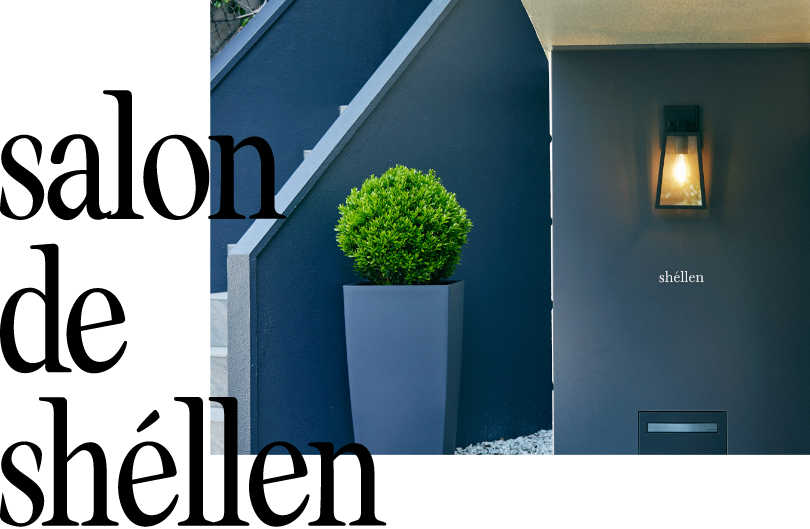
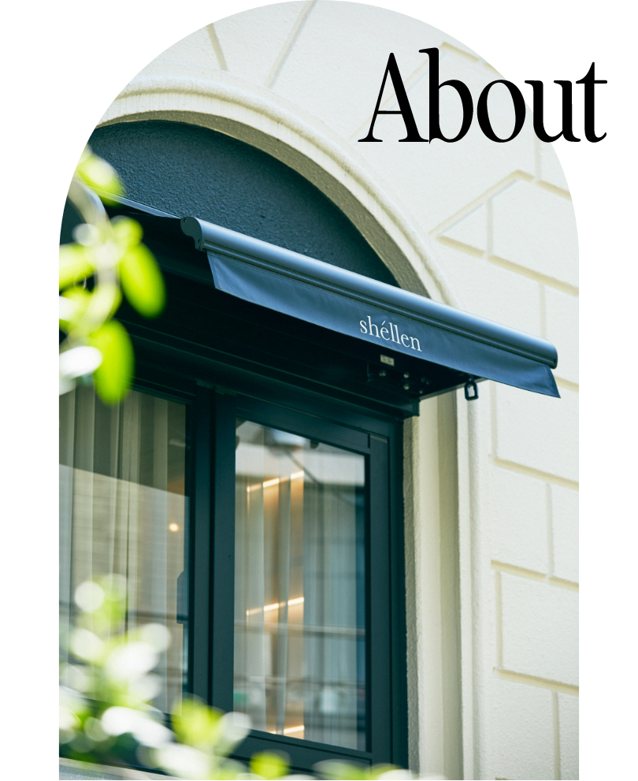
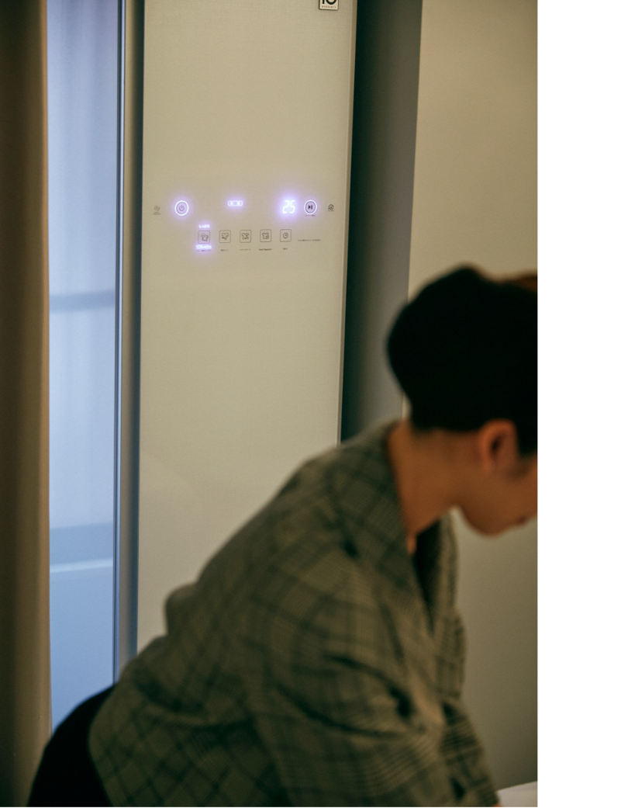
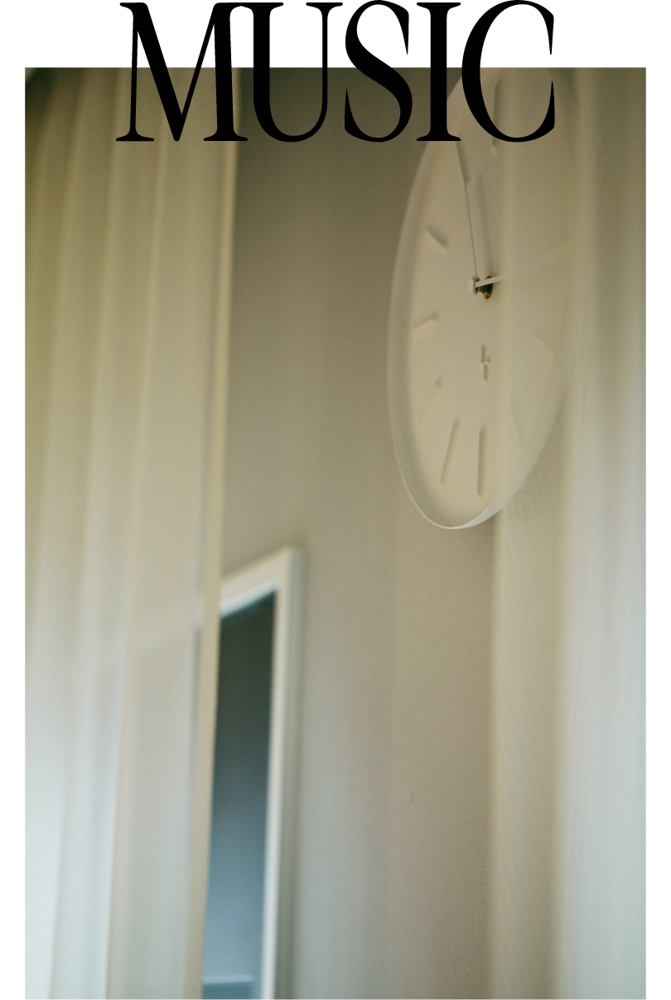
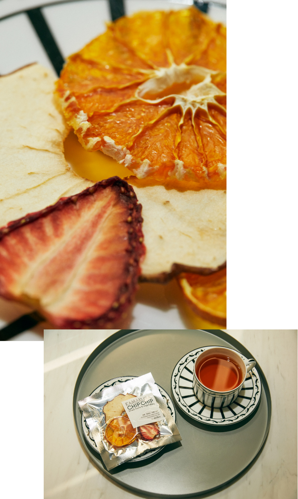
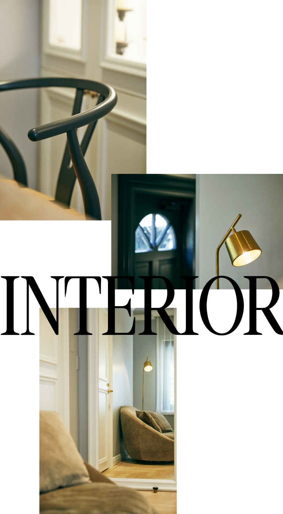
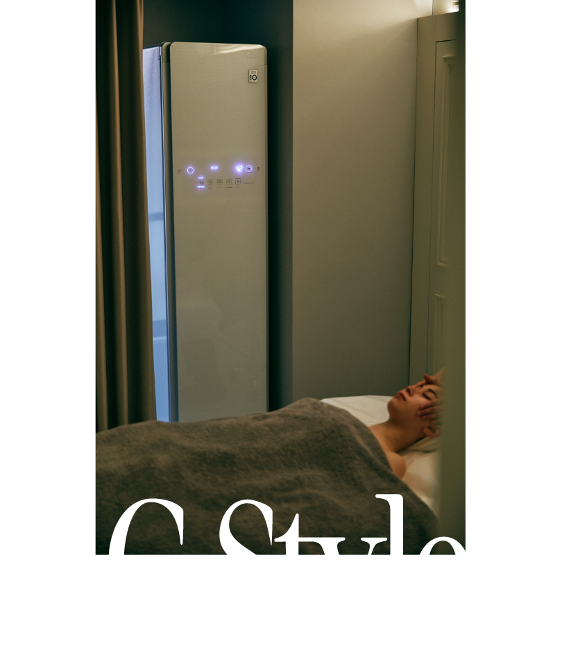

2022.05.02
2020一年4月にオープンし、瞬く間に人気を集めた新しいタイプのエステサロン、シェレン。その場所にもLG styler は設置されています。綺麗になることに対して真摯に、多角的にアプローチするシェレンの魅力の秘密に迫りました。

港区広尾。大通りから一本裏に入った閑静な住宅街にひっそりと佇むシェレン。今や芸能界や美容業界、ファッション関係者も足しげく通う名店として知られています。オープンしてまだ1年と少し。人気の理由は、エステサロンとクリニックの融合、そして既存の概念に縛られない充実したサービスにありました。

シェレンにはメスを入れずに顔のリフトアップをする「高密度焦点式超音波」の機械を導入し施術を実施しています。メスを使うことなく、超音波を肌の深部にある筋膜にピンポイントで当てることでリフトアップやたるみの解消を狙うものですが、そのためには特殊な機械と信頼できる技術が必要。そこでシェレンが導入しているのが、世界最高峰と言われるハイロニック社の「She Line」。クリニックでも使用されている高出力な機械をエステ仕様に出力を調整して施術を行います。

扱う機械がハイレベルなものになれば、その分それを扱うものの技術も必要とされるもの。シェレンのスタッフは何十時間ものトレーニングを経て技術を習得。医療レベルの技術とエステティシャンとしての美の知識と経験を融合することで効果を実感することができます。
温度調節やリクライニングができるベッドはドイツから直接輸入したもので、シェレン以外に都内でそれを使っているところは、某メゾンブランドのエステサロンだけ。特別に厚みのあるマットレスは寝心地も最高で、2時間以上に及ぶ施術でも快適に過ごすことができるのです。

さらにサロン内に流れるBGMはオリジナルで作成したもの。アルファ波の周波数と合わせているのがポイントで、最高のリラックスタイムを演出してくれる仕掛け。

施術後には厳選されたハーブティと、シェレン別注のKAMAKURA CHIP CHIPの砂糖不使用ドライフルーツを提供。サロン内ではミネラルドリンクによるファスティングと回復食までをトータルサポートするブランド〈NOUN〉の商品も取り扱うなど、綺麗になりたいという気持ちを体の内側からサポートするサービスも展開しています。
ちなみにシェレンはカスタマーを”放置”する時間がほとんどないことでも有名。フェイシャルエステのパック中、多くのサロンはエスティシャンが席を外しますが、シェレンではその時間を使って頭や脚のマッサージをしてくれるのがポイント。それもまた満足度を後押しする理由となっています。

海外のホテルのコンシェルジュを思わせるインテリアは、従来のエステサロンのイメージとは一線を画すモダンで洗練された仕上がり。顧客にファッション関係者が多いのはもちろん、男性が多いのも頷けます。
せっかく綺麗になりにきているのだから 身につけるものもリフレッシュを
隅々まで美意識の高さが感じられるシェレンは、なぜLG Stylerを導入したのでしょうか。その理由を伺いました。

「私たちはお客様のお顔やお体に施術を施して終わりというようには思っていません。綺麗になりたいという気持ちに対してもっと多角的に、深くお手伝いをさせていただきたい。ハーブティやドライフルーツ、ファスティングの酵素ドリンクと同じように、衣類のケアも大事なことだと思っています。実際に、評判はとてもいいですよ。施術中にちょうど衣類ケアが終わるのですが、帰り際に多くのお客様がその気持ちよさを実感しています。エステサロンは綺麗になるために来る場所ですから、LG Stylerがあることでその気分をさらにサポートできていると実感しています。まさに身も心もリフレッシュしてお帰りいただいているのではないでしょうか」。
身体も、体の中に取り入れるものも、そして衣類も。トータルで美しさを追求するシェレンの進化から、これからも目が離せません。

salon de shéllen
106-0047 東京都港区南麻布５丁目11-11 1F
10:00 ～ 20:00 / Last Appointment
03-6277-3351 Mail: info@shellen.jp
■ LINEでのご予約も可能です
10:00 ～ 20:00 / Last Appointment
03-6277-3351 Mail: info@shellen.jp
■ LINEでのご予約も可能です
Composition & Text: Takako Nagai [CATAL DESIGN]